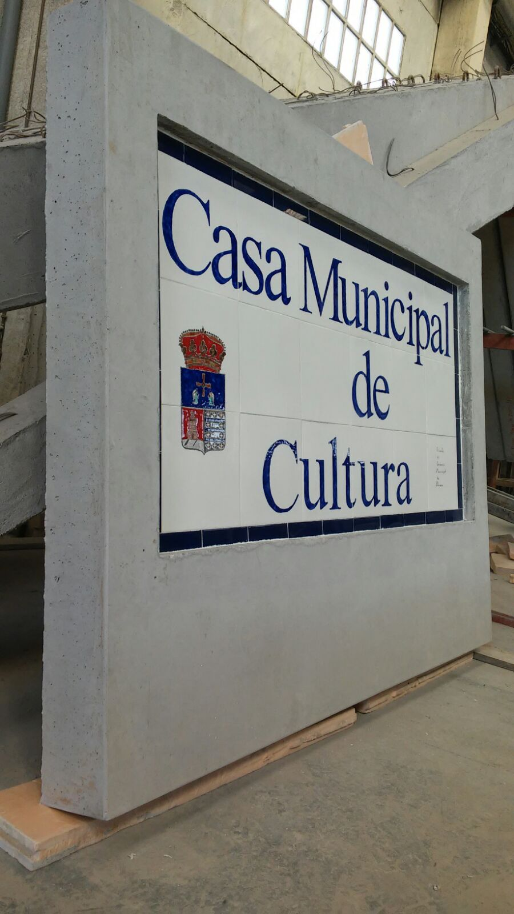

← Volver a productos


Elementos a medida
Piezas especiales
Piezas prefabricadas personalizadas para responder a necesidades técnicas específicas de cada proyecto y cada obra.
Personalización
A medida
Fabricación
Controlada y precisa
Aplicación
Obra civil y industrial
Adaptación técnica
Estudiamos todo tipo de piezas que por sus caracteristicas puedan ser prefabricadas para satisfacer necesidades específicas.
- Vigas zapata externas, suportaciones de tuberías, bloques macizos, etc.
- Diseño y producción orientados a elementos decorativos funcionales.
- Monolitos.
- Compatibilidad con instalaciones y estructuras.
Aplicaciones habituales
Utilizadas en proyectos donde se requieren piezas especiales para drenaje, canalización, soporte o integración constructiva.
Proyectos de infraestructura y urbanismo.
